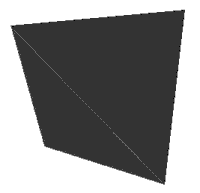
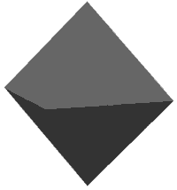
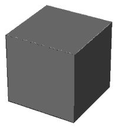
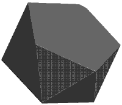
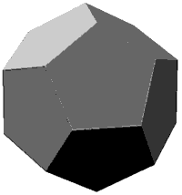
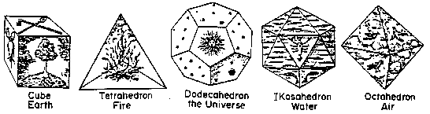

Platonic Solids (Regular polytopes in 3D)
Written by Paul Bourke
December 1993
See also platonic solids in 4D
A platonic solid (also called regular polyhedra)
is a convex polyhedron whose vertices and faces
are all of the same type.
In two dimensions there are an infinite number of regular polygons.
In three dimensions there are just five regular polyhedra.
- Tetrahedron - made of 4 equilateral triangles
- Cube - made of 6 squares
- Octahedron - made of 8 equilateral triangles
- Dodecahedron - made of 12 regular pentagons
- Icosahedron - made of 20 equilateral triangles
In 4 dimensions there are 6 regular polytopes
- 4 simplex - made of 5 tetrahedra, 3 meeting at an edge
- Hypercube - made of 8 cubes, 3 meeting at an edge
- 16 cell - made of 16 tetrahedra, 4 meeting at an edge
- 24 cell - made of 24 octahredra, 3 meeting at an edge
- 120 cell - 120 dodecahedra, 3 meeting at an edge
- 600 cell - 600 tetrahedra, 5 meeting at an edge
The measured properties of the 3 dimensional regular polyhedra
| Tetrahedron |
|  |
Vertices: 4
Edges: 6
Faces: 4
Edges per face: 3
Edges per vertex: 3
Sin of angle at edge: 2 * sqrt(2) / 3
Surface area: sqrt(3) * edgelength^2
Volume: sqrt(2) / 12 * edgelength^3
Circumscribed radius: sqrt(6) / 4 * edgelength
Inscribed radius: sqrt(6) / 12 * edgelength
Coordinates
1 1 1 -1 1 -1 1 -1 -1
-1 1 -1 -1 -1 1 1 -1 -1
1 1 1 1 -1 -1 -1 -1 1
1 1 1 -1 -1 1 -1 1 -1
Divide each coordinate by 2
|
| Octahedron |
|  |
Vertices: 6
Edges: 12
Faces: 8
Edges per face:3
Edges per vertex: 4
Sin of angle at edge: 2 * sqrt(2) / 3
Surface area: 2 * sqrt(3) * edgelength^2
Volume: sqrt(2) / 3 * edgelength^3
Circumscribed radius: sqrt(2) / 2 * edgelength
Inscribed radius: sqrt(6) / 6 * edgelength
Coordinates
-a 0 a -a 0 -a 0 b 0
-a 0 -a a 0 -a 0 b 0
a 0 -a a 0 a 0 b 0
a 0 a -a 0 a 0 b 0
a 0 -a -a 0 -a 0 -b 0
-a 0 -a -a 0 a 0 -b 0
a 0 a a 0 -a 0 -b 0
-a 0 a a 0 a 0 -b 0
Where a = 1 / (2 * sqrt(2)) and b = 1 / 2
|
| Hexahedron (cube) |
|  |
Vertices: 8
Edges: 12
Faces: 6
Edges per face: 4
Edges per vertex: 3
Sin of angle at edge: 1
Surface area: 6 * edgelength^2
Volume: edgelength^3
Circumscribed radius: sqrt(3) / 2 * edgelength
Inscribed radius: 1 / 2 * edgelength
Coordinates
-1 -1 -1 1 -1 -1 1 -1 1 -1 -1 1
-1 -1 -1 -1 -1 1 -1 1 1 -1 1 -1
-1 -1 1 1 -1 1 1 1 1 -1 1 1
-1 1 -1 -1 1 1 1 1 1 1 1 -1
1 -1 -1 1 1 -1 1 1 1 1 -1 1
-1 -1 -1 -1 1 -1 1 1 -1 1 -1 -1
Divide each vertex by 2
|
| Icosahedron |
|  |
Vertices: 12
Edges: 30
Faces: 20
Edges per face: 3
Edges per vertex: 5
Sin of angle at edge: 2 / 3
Surface area: 5 * sqrt(3) * edgelength^2
Volume: 5 * (3 + sqrt(5)) / 12 * edgelength^3
Circumscribed radius: sqrt(10 + 2 * sqrt(5)) / 4 * edgelength
Inscribed radius: sqrt(42 + 18 * sqrt(5)) / 12 * edgelength
Coordinates
0 b -a b a 0 -b a 0
0 b a -b a 0 b a 0
0 b a 0 -b a -a 0 b
0 b a a 0 b 0 -b a
0 b -a 0 -b -a a 0 -b
0 b -a -a 0 -b 0 -b -a
0 -b a b -a 0 -b -a 0
0 -b -a -b -a 0 b -a 0
-b a 0 -a 0 b -a 0 -b
-b -a 0 -a 0 -b -a 0 b
b a 0 a 0 -b a 0 b
b -a 0 a 0 b a 0 -b
0 b a -a 0 b -b a 0
0 b a b a 0 a 0 b
0 b -a -b a 0 -a 0 -b
0 b -a a 0 -b b a 0
0 -b -a -a 0 -b -b -a 0
0 -b -a b -a 0 a 0 -b
0 -b a -b -a 0 -a 0 b
0 -b a a 0 b b -a 0
Where a = 1 / 2 and b = 1 / (2 * phi)
phi is the golden ratio = (1 + sqrt(5)) / 2
Contribution by Craig Reynolds: vertices and faces
for the icosahedron. Along with C++ code to create a sphere based upon the
icosahedron: sphere.cpp, see also
surface refinement for related ideas.
|
| Dodecahedron |
|  |
Vertices: 20
Edges: 30
Faces: 12
Edges per face: 5
Edges per vertex: 3
Sin of angle at edge: 2 / sqrt(5)
Surface area: 3 * sqrt(25 + 10 * sqrt(5)) * edgelength^2
Volume: (15 + 7 * sqrt(5)) / 4 * edgelength^3
Circumscribed radius: (sqrt(15) + sqrt(3)) / 4 * edgelength
Inscribed radius: sqrt(250 + 110 * sqrt(5)) / 20 * edgelength
Coordinates
c 0 1 -c 0 1 -b b b 0 1 c b b b
-c 0 1 c 0 1 b -b b 0 -1 c -b -b b
c 0 -1 -c 0 -1 -b -b -b 0 -1 -c b -b -b
-c 0 -1 c 0 -1 b b -b 0 1 -c -b b -b
0 1 -c 0 1 c b b b 1 c 0 b b -b
0 1 c 0 1 -c -b b -b -1 c 0 -b b b
0 -1 -c 0 -1 c -b -b b -1 -c 0 -b -b -b
0 -1 c 0 -1 -c b -b -b 1 -c 0 b -b b
1 c 0 1 -c 0 b -b b c 0 1 b b b
1 -c 0 1 c 0 b b -b c 0 -1 b -b -b
-1 c 0 -1 -c 0 -b -b -b -c 0 -1 -b b -b
-1 -c 0 -1 c 0 -b b b -c 0 1 -b -b b
Where b = 1 / phi and c = 2 - phi
Divide each coordinate by 2.
|
The solids as drawn in Kepler's Mysterium Cosmographicum

and represented in stone from a neolithic settlement
Platonic solids (unit size) in POVRay format:
tetrahedron.pov,
octahedron.pov,
cube.pov,
icosahedron.pov,
dodecahedron.pov.
Solid versions, suitable for CSG
tetrahedron.pov,
octahedron.pov,
(box {}),
icosahedron.pov,
dodecahedron.pov.
|